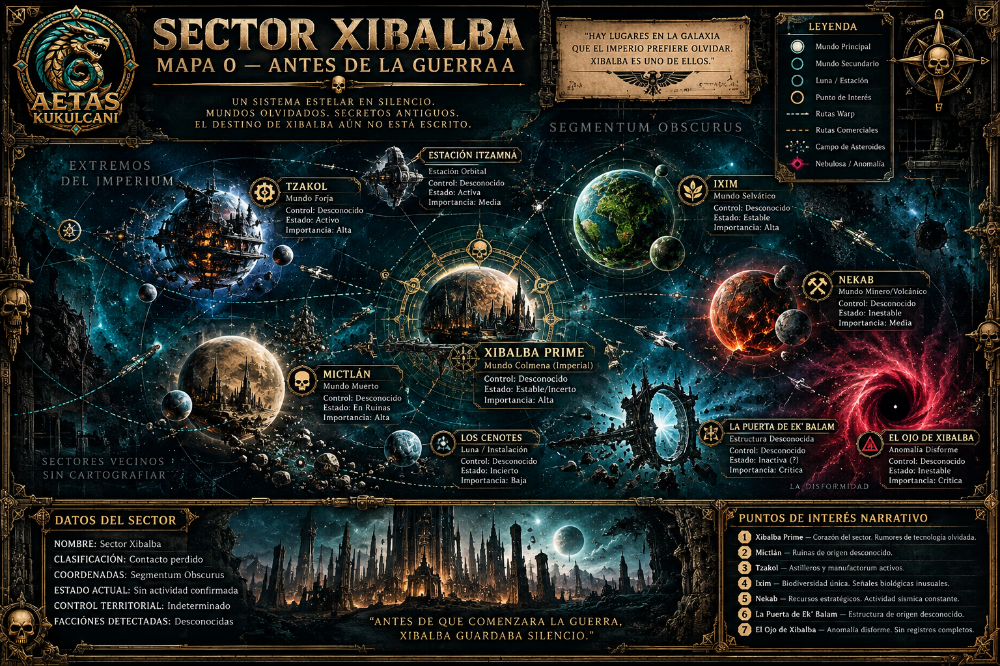

El silencio del sector
Prólogo en preparación. La historia comenzará antes de los primeros enfrentamientos, sin asignar victorias ni territorios a ninguna facción.
Un sector perdido. Mundos olvidados. Secretos antiguos. El destino de Xibalba se escribirá con las batallas de sus comandantes.

Hay lugares en la galaxia que el Imperio prefiere olvidar. Xibalba es uno de ellos.
Las rutas del sector permanecen en silencio. Sus mundos aguardan el primer contacto. Nadie controla aún su destino.
El mapa cambiará al concluir cada etapa, de acuerdo con las batallas realmente disputadas.
Leer archivo narrativo →Los emparejamientos, resultados, puntos de campaña y desempates se administran en Longshanks. Esta terminal ofrece acceso al registro oficial sin duplicar resultados.
Abrir Longshanks ↗Prólogo en preparación. La historia comenzará antes de los primeros enfrentamientos, sin asignar victorias ni territorios a ninguna facción.
Al terminar cada etapa publicaremos la crónica y el mapa actualizado según los resultados reales de los jugadores.
Victoria: 3 PC · Empate: 2 PC · Derrota: 1 PC · Incomparecencia injustificada: 0 PC. Desempate por VP acumulados.
Rondas de 15 días, con extensión justificada de hasta una semana. Cambio de facción sólo entre etapas.
Se admiten miniaturas oficiales, impresiones 3D, conversiones y proxies identificables. No se exige pintura. El mapa es exclusivamente narrativo.
Las listas se entregan antes de publicar los pareos y se hacen públicas únicamente cuando el organizador lo autorice.